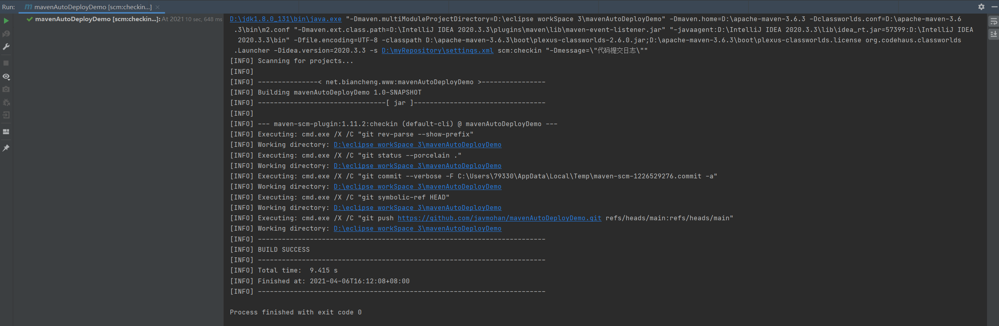
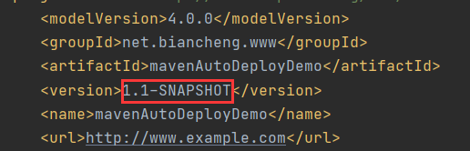
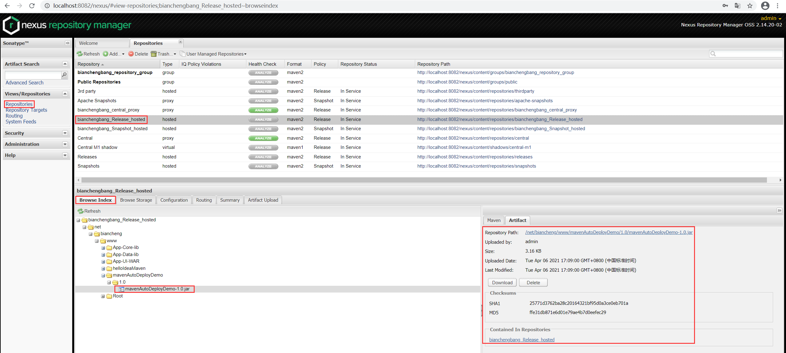

Maven自动化部署
Maven 项目的部署通常包括以下步骤：
以上这些工作通常由多个不同的团队协作完成，例如，项目研发人员负责项目代码的提交，项目管理员负责项目的构建工作，运维人员负责将构建好的应用文件部署到生产环境上等等。任何一个环节出现问题，都由可能导致 bug 甚至生产事故的发生，例如，新版本构建完成后，没有发布到指定的网络位置中，导致运维人员再次将旧版本构件部署到生产环境中。
Maven 提供了一个名为 maven-release-plugin 的插件，它可以帮助我们实现 Maven 项目的自动化部署。
maven-release-plugin 提供了很多命令，其中最常用的是以下 4 个：
1. 执行以下 mvn 命令，创建一个名为 mavenAutoDeployDemo 的 Maven 项目，请参考 Maven创建项目。
2. 将 mavenAutoDeployDemo 上传到 Github 上，由 Git 管理该项目的代码，操作步骤请参考 Git 文档。
3. 修改该项目的 POM 文件，增加 Git 以及 Nexus 的相关配置，如下。
4. 配置好之后，执行以下 mvn 命令，提交代码。
执行结果如下。
mvn release:prepare 命令执行时，需要我们输入以下信息。
命令执行完成后，查看该项目的 pom.xml，发现其版本号已经更新为 1.1-SNAPSHOT，如图 2 所示。
执行结果如下。
7. 访问 Nexus 用户界面，查看仓库列表，选中名称为 bianchengbang_Release_hosted 的宿主仓库，点击 Browse Index 选项卡，查看该仓库中的构件。我们会发现 mavenAutoDeployDemo-1.0.jar 已经被部署到 Nexus 仓库中，如下图。
- 将项目代码提交到 SVN 或 Git 等版本控制系统中，并进行标记。
- 从 SVN 或 Git 上下载完整的项目代码。
- 构建应用。
- 将构建输出的 WAR 或 JAR 文件存放在指定的公共网络位置中。
- 从指定网络中获取文件，并部署到生产环境上。
- 更新项目文档以及版本号。
以上这些工作通常由多个不同的团队协作完成，例如，项目研发人员负责项目代码的提交，项目管理员负责项目的构建工作，运维人员负责将构建好的应用文件部署到生产环境上等等。任何一个环节出现问题，都由可能导致 bug 甚至生产事故的发生，例如，新版本构建完成后，没有发布到指定的网络位置中，导致运维人员再次将旧版本构件部署到生产环境中。
自动化部署的实现方式
为了避免以上问题的发生，我们通常采用如下的架构来管理项目：- 版本控制工具（本节以 Git 为例）：管理项目源代码
- Maven：负责编译和发布项目
- 远程仓库管理工具（本节以 Nexus 为例）：管理构建生成的二进制文件
Maven 提供了一个名为 maven-release-plugin 的插件，它可以帮助我们实现 Maven 项目的自动化部署。
maven-release-plugin 提供了很多命令，其中最常用的是以下 4 个：
| 命令 | 执行的操作 |
|---|---|
| mvn release:clean | 如果上次发布过程不成功，则使用该命令清理工作空间。 |
| mvn release:rollback | 若上一次发布过程不成功，回滚对代码和配置所做的更改。 |
| mvn release:prepare |
|
| mvn release:perform | 从 Git 中检出上面标记的正式版代码，并执行命令 mvn deploy ，将正式版本的构件部署到 Nexus 中。 |
maven-release-plugin 插件的使用
使用 maven-release-plugin 插件实现项目的自动化部署需要以下步骤。1. 执行以下 mvn 命令，创建一个名为 mavenAutoDeployDemo 的 Maven 项目，请参考 Maven创建项目。
mvn archetype:generate -DgroupId=net.biancheng.www -DartifactId=mavenAutoDeployDemo -DarchetypeArtifactId=maven-archetype-quickstart -DinteractiveMode=false
2. 将 mavenAutoDeployDemo 上传到 Github 上，由 Git 管理该项目的代码，操作步骤请参考 Git 文档。
3. 修改该项目的 POM 文件，增加 Git 以及 Nexus 的相关配置，如下。
<?xml version="1.0" encoding="UTF-8"?>
<project xmlns="http://maven.apache.org/POM/4.0.0" xmlns:xsi="http://www.w3.org/2001/XMLSchema-instance"
xsi:schemaLocation="http://maven.apache.org/POM/4.0.0 http://maven.apache.org/xsd/maven-4.0.0.xsd">
<modelVersion>4.0.0</modelVersion>
<groupId>net.biancheng.www</groupId>
<artifactId>mavenAutoDeployDemo</artifactId>
<version>1.0-SNAPSHOT</version>
<name>mavenAutoDeployDemo</name>
<url>http://www.example.com</url>
<!--配置 git 地址-->
<scm>
<url></url>
<connection>scm:git:https://github.com/javmohan/mavenAutoDeployDemo.git</connection>
<developerConnection>scm:git:https://github.com/javmohan/mavenAutoDeployDemo.git</developerConnection>
</scm>
<properties>
<project.build.sourceEncoding>UTF-8</project.build.sourceEncoding>
<maven.compiler.source>1.7</maven.compiler.source>
<maven.compiler.target>1.7</maven.compiler.target>
</properties>
<dependencies>
<dependency>
<groupId>junit</groupId>
<artifactId>junit</artifactId>
<version>4.11</version>
<scope>test</scope>
</dependency>
</dependencies>
<build>
<pluginManagement><!-- lock down plugins versions to avoid using Maven defaults (may be moved to parent pom) -->
<plugins>
<!-- clean lifecycle, see https://maven.apache.org/ref/current/maven-core/lifecycles.html#clean_Lifecycle -->
<plugin>
<artifactId>maven-clean-plugin</artifactId>
<version>3.1.0</version>
</plugin>
<!-- default lifecycle, jar packaging: see https://maven.apache.org/ref/current/maven-core/default-bindings.html#Plugin_bindings_for_jar_packaging -->
<plugin>
<artifactId>maven-resources-plugin</artifactId>
<version>3.0.2</version>
</plugin>
<plugin>
<artifactId>maven-compiler-plugin</artifactId>
<version>3.8.0</version>
</plugin>
<plugin>
<artifactId>maven-surefire-plugin</artifactId>
<version>2.22.1</version>
</plugin>
<plugin>
<artifactId>maven-jar-plugin</artifactId>
<version>3.0.2</version>
</plugin>
<plugin>
<artifactId>maven-install-plugin</artifactId>
<version>2.5.2</version>
</plugin>
<plugin>
<artifactId>maven-deploy-plugin</artifactId>
<version>2.8.2</version>
</plugin>
<!-- site lifecycle, see https://maven.apache.org/ref/current/maven-core/lifecycles.html#site_Lifecycle -->
<plugin>
<artifactId>maven-site-plugin</artifactId>
<version>3.7.1</version>
</plugin>
<plugin>
<artifactId>maven-project-info-reports-plugin</artifactId>
<version>3.0.0</version>
</plugin>
</plugins>
</pluginManagement>
<plugins>
<!--配置 maven-release-plugin 插件-->
<plugin>
<groupId>org.apache.maven.plugins</groupId>
<artifactId>maven-release-plugin</artifactId>
<version>2.5.3</version>
<configuration>
<useReleaseProfile>false</useReleaseProfile>
<goals>deploy</goals>
<checkModificationExcludes>
<checkModificationExclude>.idea</checkModificationExclude>
</checkModificationExcludes>
<autoVersionSubmodules>true</autoVersionSubmodules>
</configuration>
</plugin>
</plugins>
</build>
<!--配置发布到 Nexus 的地址-->
<distributionManagement>
<repository>
<id>bianchengbang_Release_hosted</id>
<url>http://localhost:8082/nexus/content/repositories/bianchengbang_Release_hosted/</url>
</repository>
<snapshotRepository>
<id>Snapshot</id>
<url>http://localhost:8082/nexus/content/repositories/bianchengbang_Snapshot_hosted/</url>
</snapshotRepository>
</distributionManagement>
</project>
4. 配置好之后，执行以下 mvn 命令，提交代码。
mvn scm:checkin -Dmessage="代码提交日志" #代码提交命令执行结果如下图。

图1：提交代码
5. 执行以下 mvn 命令。
图1：提交代码
mvn release:prepare
执行结果如下。
[INFO] Scanning for projects... [INFO] [INFO] ---------------< net.biancheng.www:mavenAutoDeployDemo >---------------- [INFO] Building mavenAutoDeployDemo 1.0-SNAPSHOT [INFO] --------------------------------[ jar ]--------------------------------- [INFO] [INFO] --- maven-release-plugin:2.5.3:prepare (default-cli) @ mavenAutoDeployDemo --- [INFO] Verifying that there are no local modifications... [INFO] ignoring changes on: **\pom.xml.next, **\release.properties, **\pom.xml.branch, **\pom.xml.tag, .idea, **\pom.xml.backup, **\pom.xml.releaseBackup [INFO] Executing: cmd.exe /X /C "git rev-parse --show-toplevel" [INFO] Working directory: D:\eclipse workSpace 3\mavenAutoDeployDemo [INFO] Executing: cmd.exe /X /C "git status --porcelain ." [INFO] Working directory: D:\eclipse workSpace 3\mavenAutoDeployDemo [WARNING] Ignoring unrecognized line: ?? release.properties [INFO] Checking dependencies and plugins for snapshots ... What is the release version for "mavenAutoDeployDemo"? (net.biancheng.www:mavenAutoDeployDemo) 1.0: : What is SCM release tag or label for "mavenAutoDeployDemo"? (net.biancheng.www:mavenAutoDeployDemo) mavenAutoDeployDemo-1.0: : What is the new development version for "mavenAutoDeployDemo"? (net.biancheng.www:mavenAutoDeployDemo) 1.1-SNAPSHOT: : [INFO] Transforming 'mavenAutoDeployDemo'... [INFO] Not generating release POMs [INFO] Executing goals 'clean verify'... [WARNING] Maven will be executed in interactive mode, but no input stream has been configured for this MavenInvoker instance. [INFO] [INFO] Scanning for projects... [INFO] [INFO] [INFO] [INFO] ---------------< net.biancheng.www:mavenAutoDeployDemo >---------------- [INFO] [INFO] Building mavenAutoDeployDemo 1.0 [INFO] [INFO] --------------------------------[ jar ]--------------------------------- [INFO] [INFO] [INFO] [INFO] --- maven-clean-plugin:3.1.0:clean (default-clean) @ mavenAutoDeployDemo --- [INFO] [INFO] [INFO] [INFO] --- maven-resources-plugin:3.0.2:resources (default-resources) @ mavenAutoDeployDemo --- [INFO] [INFO] Using 'UTF-8' encoding to copy filtered resources. [INFO] [INFO] skip non existing resourceDirectory D:\eclipse workSpace 3\mavenAutoDeployDemo\src\main\resources [INFO] [INFO] [INFO] [INFO] --- maven-compiler-plugin:3.8.0:compile (default-compile) @ mavenAutoDeployDemo --- [INFO] [INFO] Changes detected - recompiling the module! [INFO] [INFO] Compiling 1 source file to D:\eclipse workSpace 3\mavenAutoDeployDemo\target\classes [INFO] [INFO] [INFO] [INFO] --- maven-resources-plugin:3.0.2:testResources (default-testResources) @ mavenAutoDeployDemo --- [INFO] [INFO] Using 'UTF-8' encoding to copy filtered resources. [INFO] [INFO] skip non existing resourceDirectory D:\eclipse workSpace 3\mavenAutoDeployDemo\src\test\resources [INFO] [INFO] [INFO] [INFO] --- maven-compiler-plugin:3.8.0:testCompile (default-testCompile) @ mavenAutoDeployDemo --- [INFO] [INFO] Changes detected - recompiling the module! [INFO] [INFO] Compiling 1 source file to D:\eclipse workSpace 3\mavenAutoDeployDemo\target\test-classes [INFO] [INFO] [INFO] [INFO] --- maven-surefire-plugin:2.22.1:test (default-test) @ mavenAutoDeployDemo --- [INFO] [INFO] [INFO] [INFO] ------------------------------------------------------- [INFO] [INFO] T E S T S [INFO] [INFO] ------------------------------------------------------- [INFO] [INFO] Running net.biancheng.www.AppTest [INFO] [INFO] Tests run: 1, Failures: 0, Errors: 0, Skipped: 0, Time elapsed: 0.023 s - in net.biancheng.www.AppTest [INFO] [INFO] [INFO] [INFO] Results: [INFO] [INFO] [INFO] [INFO] Tests run: 1, Failures: 0, Errors: 0, Skipped: 0 [INFO] [INFO] [INFO] [INFO] [INFO] [INFO] --- maven-jar-plugin:3.0.2:jar (default-jar) @ mavenAutoDeployDemo --- [INFO] [INFO] Building jar: D:\eclipse workSpace 3\mavenAutoDeployDemo\target\mavenAutoDeployDemo-1.0.jar [INFO] [INFO] ------------------------------------------------------------------------ [INFO] [INFO] BUILD SUCCESS [INFO] [INFO] ------------------------------------------------------------------------ [INFO] [INFO] Total time: 3.531 s [INFO] [INFO] Finished at: 2021-04-06T16:39:23+08:00 [INFO] [INFO] ------------------------------------------------------------------------ [INFO] Checking in modified POMs... [INFO] Executing: cmd.exe /X /C "git add -- pom.xml" [INFO] Working directory: D:\eclipse workSpace 3\mavenAutoDeployDemo [INFO] Executing: cmd.exe /X /C "git rev-parse --show-toplevel" [INFO] Working directory: D:\eclipse workSpace 3\mavenAutoDeployDemo [INFO] Executing: cmd.exe /X /C "git status --porcelain ." [INFO] Working directory: D:\eclipse workSpace 3\mavenAutoDeployDemo [WARNING] Ignoring unrecognized line: ?? pom.xml.releaseBackup [WARNING] Ignoring unrecognized line: ?? release.properties [WARNING] Ignoring unrecognized line: ?? target/ [INFO] Executing: cmd.exe /X /C "git commit --verbose -F C:\Users\79330\AppData\Local\Temp\maven-scm-302875220.commit pom.xml" [INFO] Working directory: D:\eclipse workSpace 3\mavenAutoDeployDemo [INFO] Executing: cmd.exe /X /C "git symbolic-ref HEAD" [INFO] Working directory: D:\eclipse workSpace 3\mavenAutoDeployDemo [INFO] Executing: cmd.exe /X /C "git push https://github.com/javmohan/mavenAutoDeployDemo.git refs/heads/main:refs/heads/main" [INFO] Working directory: D:\eclipse workSpace 3\mavenAutoDeployDemo [INFO] Tagging release with the label mavenAutoDeployDemo-1.0... [INFO] Executing: cmd.exe /X /C "git tag -F C:\Users\79330\AppData\Local\Temp\maven-scm-1133489209.commit mavenAutoDeployDemo-1.0" [INFO] Working directory: D:\eclipse workSpace 3\mavenAutoDeployDemo [INFO] Executing: cmd.exe /X /C "git push https://github.com/javmohan/mavenAutoDeployDemo.git refs/tags/mavenAutoDeployDemo-1.0" [INFO] Working directory: D:\eclipse workSpace 3\mavenAutoDeployDemo [INFO] Executing: cmd.exe /X /C "git ls-files" [INFO] Working directory: D:\eclipse workSpace 3\mavenAutoDeployDemo [INFO] Transforming 'mavenAutoDeployDemo'... [INFO] Not removing release POMs [INFO] Checking in modified POMs... [INFO] Executing: cmd.exe /X /C "git add -- pom.xml" [INFO] Working directory: D:\eclipse workSpace 3\mavenAutoDeployDemo [INFO] Executing: cmd.exe /X /C "git rev-parse --show-toplevel" [INFO] Working directory: D:\eclipse workSpace 3\mavenAutoDeployDemo [INFO] Executing: cmd.exe /X /C "git status --porcelain ." [INFO] Working directory: D:\eclipse workSpace 3\mavenAutoDeployDemo [WARNING] Ignoring unrecognized line: ?? pom.xml.releaseBackup [WARNING] Ignoring unrecognized line: ?? release.properties [WARNING] Ignoring unrecognized line: ?? target/ [INFO] Executing: cmd.exe /X /C "git commit --verbose -F C:\Users\79330\AppData\Local\Temp\maven-scm-918010337.commit pom.xml" [INFO] Working directory: D:\eclipse workSpace 3\mavenAutoDeployDemo [INFO] Executing: cmd.exe /X /C "git symbolic-ref HEAD" [INFO] Working directory: D:\eclipse workSpace 3\mavenAutoDeployDemo [INFO] Executing: cmd.exe /X /C "git push https://github.com/javmohan/mavenAutoDeployDemo.git refs/heads/main:refs/heads/main" [INFO] Working directory: D:\eclipse workSpace 3\mavenAutoDeployDemo [INFO] Release preparation complete. [INFO] ------------------------------------------------------------------------ [INFO] BUILD SUCCESS [INFO] ------------------------------------------------------------------------ [INFO] Total time: 01:06 min [INFO] Finished at: 2021-04-06T16:39:40+08:00 [INFO] ------------------------------------------------------------------------
mvn release:prepare 命令执行时，需要我们输入以下信息。
What is the release version for "mavenAutoDeployDemo"? (net.biancheng.www:mavenAutoDeployDemo) 1.0: :询问 mavenAutoDeployDemo 项目的发布版本是什么？默认值是 1.0，此处我们直接回车使用默认值。
What is SCM release tag or label for "mavenAutoDeployDemo"? (net.biancheng.www:mavenAutoDeployDemo) mavenAutoDeployDemo-1.0: :询问 mavenAutoDeployDemo 项目的 SCM 发布标签是什么？默认值是 mavenAutoDeployDemo-1.0，此处我们直接回车使用默认值。
What is the new development version for "mavenAutoDeployDemo"? (net.biancheng.www:mavenAutoDeployDemo) 1.1-SNAPSHOT: :询问 mavenAutoDeployDemo 项目新的开发版本是什么？默认值是1.1-SNAPSHOT，此处我们直接回车使用默认值。
命令执行完成后，查看该项目的 pom.xml，发现其版本号已经更新为 1.1-SNAPSHOT，如图 2 所示。

图2：更新版本号
6. 执行以下 mvn 命令，将正式版本的构件发布到 Nexus 中。
图2：更新版本号
mvn release:perform
执行结果如下。
[INFO] Scanning for projects... [INFO] [INFO] ---------------< net.biancheng.www:mavenAutoDeployDemo >---------------- [INFO] Building mavenAutoDeployDemo 1.1-SNAPSHOT [INFO] --------------------------------[ jar ]--------------------------------- [INFO] [INFO] --- maven-release-plugin:2.5.3:perform (default-cli) @ mavenAutoDeployDemo --- [INFO] Checking out the project to perform the release ... [INFO] Executing: cmd.exe /X /C "git clone --branch mavenAutoDeployDemo-1.0 https://github.com/javmohan/mavenAutoDeployDemo.git "D:\eclipse workSpace 3\mavenAutoDeployDemo\target\checkout"" [INFO] Working directory: D:\eclipse workSpace 3\mavenAutoDeployDemo\target [INFO] Executing: cmd.exe /X /C "git ls-remote https://github.com/javmohan/mavenAutoDeployDemo.git" [INFO] Working directory: C:\Users\79330\AppData\Local\Temp [INFO] Executing: cmd.exe /X /C "git fetch https://github.com/javmohan/mavenAutoDeployDemo.git" [INFO] Working directory: D:\eclipse workSpace 3\mavenAutoDeployDemo\target\checkout [INFO] Executing: cmd.exe /X /C "git checkout mavenAutoDeployDemo-1.0" [INFO] Working directory: D:\eclipse workSpace 3\mavenAutoDeployDemo\target\checkout [INFO] Executing: cmd.exe /X /C "git ls-files" [INFO] Working directory: D:\eclipse workSpace 3\mavenAutoDeployDemo\target\checkout [INFO] Invoking perform goals in directory D:\eclipse workSpace 3\mavenAutoDeployDemo\target\checkout [INFO] Executing goals 'deploy'... [WARNING] Maven will be executed in interactive mode, but no input stream has been configured for this MavenInvoker instance. [INFO] [INFO] Scanning for projects... [INFO] [INFO] [INFO] [INFO] ---------------< net.biancheng.www:mavenAutoDeployDemo >---------------- [INFO] [INFO] Building mavenAutoDeployDemo 1.0 [INFO] [INFO] --------------------------------[ jar ]--------------------------------- [INFO] [INFO] [INFO] [INFO] --- maven-resources-plugin:3.0.2:resources (default-resources) @ mavenAutoDeployDemo --- [INFO] [INFO] Using 'UTF-8' encoding to copy filtered resources. [INFO] [INFO] skip non existing resourceDirectory D:\eclipse workSpace 3\mavenAutoDeployDemo\target\checkout\src\main\resources [INFO] [INFO] [INFO] [INFO] --- maven-compiler-plugin:3.8.0:compile (default-compile) @ mavenAutoDeployDemo --- [INFO] [INFO] Changes detected - recompiling the module! [INFO] [INFO] Compiling 1 source file to D:\eclipse workSpace 3\mavenAutoDeployDemo\target\checkout\target\classes [INFO] [INFO] [INFO] [INFO] --- maven-resources-plugin:3.0.2:testResources (default-testResources) @ mavenAutoDeployDemo --- [INFO] [INFO] Using 'UTF-8' encoding to copy filtered resources. [INFO] [INFO] skip non existing resourceDirectory D:\eclipse workSpace 3\mavenAutoDeployDemo\target\checkout\src\test\resources [INFO] [INFO] [INFO] [INFO] --- maven-compiler-plugin:3.8.0:testCompile (default-testCompile) @ mavenAutoDeployDemo --- [INFO] [INFO] Changes detected - recompiling the module! [INFO] [INFO] Compiling 1 source file to D:\eclipse workSpace 3\mavenAutoDeployDemo\target\checkout\target\test-classes [INFO] [INFO] [INFO] [INFO] --- maven-surefire-plugin:2.22.1:test (default-test) @ mavenAutoDeployDemo --- [INFO] [INFO] [INFO] [INFO] ------------------------------------------------------- [INFO] [INFO] T E S T S [INFO] [INFO] ------------------------------------------------------- [INFO] [INFO] Running net.biancheng.www.AppTest [INFO] [INFO] Tests run: 1, Failures: 0, Errors: 0, Skipped: 0, Time elapsed: 0.019 s - in net.biancheng.www.AppTest [INFO] [INFO] [INFO] [INFO] Results: [INFO] [INFO] [INFO] [INFO] Tests run: 1, Failures: 0, Errors: 0, Skipped: 0 [INFO] [INFO] [INFO] [INFO] [INFO] [INFO] --- maven-jar-plugin:3.0.2:jar (default-jar) @ mavenAutoDeployDemo --- [INFO] [INFO] Building jar: D:\eclipse workSpace 3\mavenAutoDeployDemo\target\checkout\target\mavenAutoDeployDemo-1.0.jar [INFO] [INFO] [INFO] [INFO] --- maven-install-plugin:2.5.2:install (default-install) @ mavenAutoDeployDemo --- [INFO] [INFO] Installing D:\eclipse workSpace 3\mavenAutoDeployDemo\target\checkout\target\mavenAutoDeployDemo-1.0.jar to D:\myRepository\repository\net\biancheng\www\mavenAutoDeployDemo\1.0\mavenAutoDeployDemo-1.0.jar [INFO] [INFO] Installing D:\eclipse workSpace 3\mavenAutoDeployDemo\target\checkout\pom.xml to D:\myRepository\repository\net\biancheng\www\mavenAutoDeployDemo\1.0\mavenAutoDeployDemo-1.0.pom [INFO] [INFO] [INFO] [INFO] --- maven-deploy-plugin:2.8.2:deploy (default-deploy) @ mavenAutoDeployDemo --- [INFO] Uploading to bianchengbang_Release_hosted: http://localhost:8082/nexus/content/repositories/bianchengbang_Release_hosted/net/biancheng/www/mavenAutoDeployDemo/1.0/mavenAutoDeployDemo-1.0.jar [INFO] Progress (1): 3.2 kB [INFO] [INFO] Uploaded to bianchengbang_Release_hosted: http://localhost:8082/nexus/content/repositories/bianchengbang_Release_hosted/net/biancheng/www/mavenAutoDeployDemo/1.0/mavenAutoDeployDemo-1.0.jar (3.2 kB at 15 kB/s) [INFO] Uploading to bianchengbang_Release_hosted: http://localhost:8082/nexus/content/repositories/bianchengbang_Release_hosted/net/biancheng/www/mavenAutoDeployDemo/1.0/mavenAutoDeployDemo-1.0.pom [INFO] Progress (1): 4.1/4.7 kB [INFO] Progress (1): 4.7 kB [INFO] [INFO] Uploaded to bianchengbang_Release_hosted: http://localhost:8082/nexus/content/repositories/bianchengbang_Release_hosted/net/biancheng/www/mavenAutoDeployDemo/1.0/mavenAutoDeployDemo-1.0.pom (4.7 kB at 42 kB/s) [INFO] Downloading from bianchengbang_Release_hosted: http://localhost:8082/nexus/content/repositories/bianchengbang_Release_hosted/net/biancheng/www/mavenAutoDeployDemo/maven-metadata.xml [INFO] Uploading to bianchengbang_Release_hosted: http://localhost:8082/nexus/content/repositories/bianchengbang_Release_hosted/net/biancheng/www/mavenAutoDeployDemo/maven-metadata.xml [INFO] Progress (1): 312 B [INFO] [INFO] Uploaded to bianchengbang_Release_hosted: http://localhost:8082/nexus/content/repositories/bianchengbang_Release_hosted/net/biancheng/www/mavenAutoDeployDemo/maven-metadata.xml (312 B at 5.2 kB/s) [INFO] [INFO] ------------------------------------------------------------------------ [INFO] [INFO] BUILD SUCCESS [INFO] [INFO] ------------------------------------------------------------------------ [INFO] [INFO] Total time: 4.080 s [INFO] [INFO] Finished at: 2021-04-06T17:09:00+08:00 [INFO] [INFO] ------------------------------------------------------------------------ [INFO] Cleaning up after release... [INFO] ------------------------------------------------------------------------ [INFO] BUILD SUCCESS [INFO] ------------------------------------------------------------------------ [INFO] Total time: 18.437 s [INFO] Finished at: 2021-04-06T17:09:00+08:00 [INFO] ------------------------------------------------------------------------
7. 访问 Nexus 用户界面，查看仓库列表，选中名称为 bianchengbang_Release_hosted 的宿主仓库，点击 Browse Index 选项卡，查看该仓库中的构件。我们会发现 mavenAutoDeployDemo-1.0.jar 已经被部署到 Nexus 仓库中，如下图。

图3：Nexus 仓库中查看构件
图3：Nexus 仓库中查看构件
注意：
运行命令前，一定要将所有代码都提交到 Git，不然会报错。
当发布完成后，项目的版本号会自动更新，并且将正式版发布到指定的 Release 库中。
关注公众号「站长严长生」，在手机上阅读所有教程，随时随地都能学习。内含一款搜索神器，免费下载全网书籍和视频。

微信扫码关注公众号